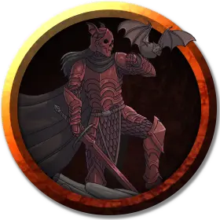

Рыцарь Ордена
Knight of the Order
Средняя Нежить, законно-злая

Класс Доспеха 13 (сломанная кольчуга)
Хиты 136 (16к8 + 64)
Скорость 30 футов
| мод | спас | ||
|---|---|---|---|
| СИЛ | 18 | +4 | +7 |
| ЛОВ | 14 | +2 | +2 |
| ТЕЛ | 18 | +4 | +7 |
| мод | спас | ||
|---|---|---|---|
| ИНТ | 13 | +1 | +1 |
| МДР | 16 | +3 | +6 |
| ХАР | 18 | +4 | +7 |
Сопротивление урону некротическая энергия, психическая энергия
Иммунитет к урону яд
Иммунитет к состояниям паралич, ошеломление, очарование, отравление, истощение, испуг
Чувства тёмное зрение 60 футов, пассивное Восприятие 13
Языки все, известные при жизни
Опасность 5 (1800 опыта)
Бонус мастерства +3
Особенности
Регенерация. Рыцарь восстанавливает 10 хитов в начале своего хода. Если рыцарь получает урон излучением или огнём, эта особенность не действует в начале следующего хода рыцаря. Тело рыцаря уничтожается только если он начинает ход с 0 хитов и не может регенерировать.
Восстановление. Если тело рыцаря уничтожается, его душа остается. Через 24 часа душа вселяется в другой труп Гуманоида на том же плане существования и оживляет его, восстанавливая все хиты. Пока душа находится без тела, заклинание исполнение желаний [wish] может отправить душу в посмертие, не позволяя ей вернуться.
Иммунитет к изгнанию. Рыцарь обладает иммунитетом к эффектам, изгоняющим нежить.
Мстительный следопыт. Рыцарь знает направление и расстояние до любого существа, которому он хочет отомстить, даже если они находятся на разных планах существования. Если существо, выслеживаемое рыцарем, умирает, рыцарь узнаёт об этом.
Действия
Мультиатака. Рыцарь совершает две атаки мечом или кулаком.
Длинный меч. Рукопашная атака оружием: +7 к попаданию, досягаемость 5 футов, одна цель. Попадание: Рубящий урон 15 (2к10 + 4). Если цель — существо, которому рыцарь поклялся отомстить, цель получает от атаки дополнительный рубящий урон 14 (4к6).
Кулак. Рукопашная атака оружием: +7 к попаданию, досягаемость 5 футов, одна цель. Попадание: Дробящий урон 11 (2к6 + 4). Если цель — существо, которому рыцарь поклялся отомстить, цель получает от атаки дополнительный дробящий урон 14 (4к6). Вместо причинения урона рыцарь может схватить цель (Сл высвобождения 14), если размер цели не больше Большого.
Мстительный взор. Рыцарь нацеливается на одно существо, которое видит в пределах 30 футов от себя, которому он поклялся отомстить. Цель должна совершить спасбросок Мудрости Сл 15. При провале цель становится парализованной, пока рыцарь не причинит ей урон, или до конца следующего хода рыцаря. Когда паралич оканчивается, цель становится испуганной рыцарем на 1 минуту. Испуганная цель может повторять этот спасбросок в конце каждого своего хода, с помехой, если видит рыцаря, оканчивая испуг на себе при успехе.
Описание
С расстояния, ревенант выглядит как зомби и может быть ошибочно принят за него. Персонаж на расстоянии 30 футов, преуспевший в проверке Мудрости (Проницательность) Сл 10, замечает искру интеллекта и огонь ненависти в его впалых глазах. Ревенант облачён в изодранную кольчугу, которая предоставляет такую же степень защиты, как и кожаный доспех.
Ревенант был рыцарем Ордена Серебряного Дракона, который был уничтожен при защите долины от армии Страда более, чем четыре века назад. Ревенант более не помнит своего имени и бродит по земле в поисках волков и прислужников Страда, которых убивает без разговоров. Если персонажи нападают на него, он считает, что они союзники Страда и сражается с ними до самого конца.
Если персонажи представятся врагами Страда, ревенант предлагает им отправиться в Аргинвостхольт [Argynvostholt] (глава 7) и убедить Владимира Хорнгаарда [Vladimir Horngaard], главу Ордена Серебряного Дракона, помочь им. Ревенант более всего желает убить Страда, но не отправится в Замок Равенлофт,пока не получит такого приказа от Владимира. Если персонажи попросят ревенанта отвести их к Хорнгаарду в Аргинвостхольт, он сделает это, но будет избегать контакта с поселениями Баровии.
Ревенант появляется из души смертного, встретившего жестокую и незаслуженную судьбу. Он прорывается обратно в мир для мести своему обидчику. Ревенант вселяется в свое смертное тело и внешне похож на зомби, но вместо безжизненной блеклости глаза ревенанта пылают решимостью и разгораются в присутствии врага. Если тело ревенанта разрушено или недостижимо, он вселяется в другой труп гуманоида. Вне зависимости от используемого вместилища, враг всегда узнает истинную сущность ревенанта.
Жажда мести. Для осуществления мести у ревенанта имеется только один год. Если же враг погиб, или ревенант не может исполнить месть до назначенного срока, его тело рассыпается в пыль, а душа уходит в посмертие. В случае, когда враг ревенанта слишком могущественен, чтобы справится с ним в одиночку, он ищет достойных союзников для исполнения мести.
Божественное правосудие. Никакая магия не может укрыть цель преследования ревенанта; он всегда знает направление и расстояние между ним и объектом мести. В случае, когда целей несколько, он выслеживает их по одному за раз, начиная с существа, нанесшего ему смертельный удар. Если тело ревенанта уничтожено, его душа летит далее в поиске нового трупа, в котором он возобновит свою охоту.
Природа нежити. Ревенанту не нужен воздух, еда, питье и сон.